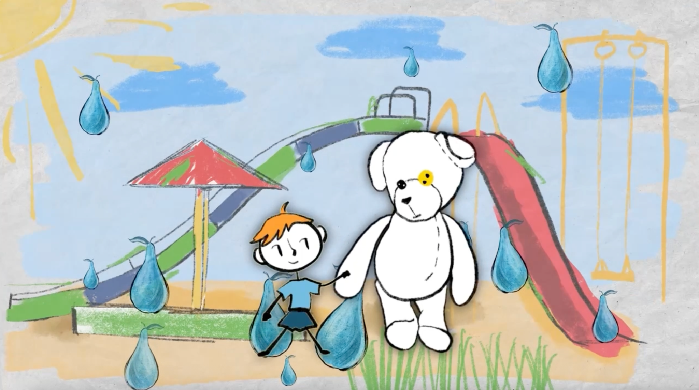
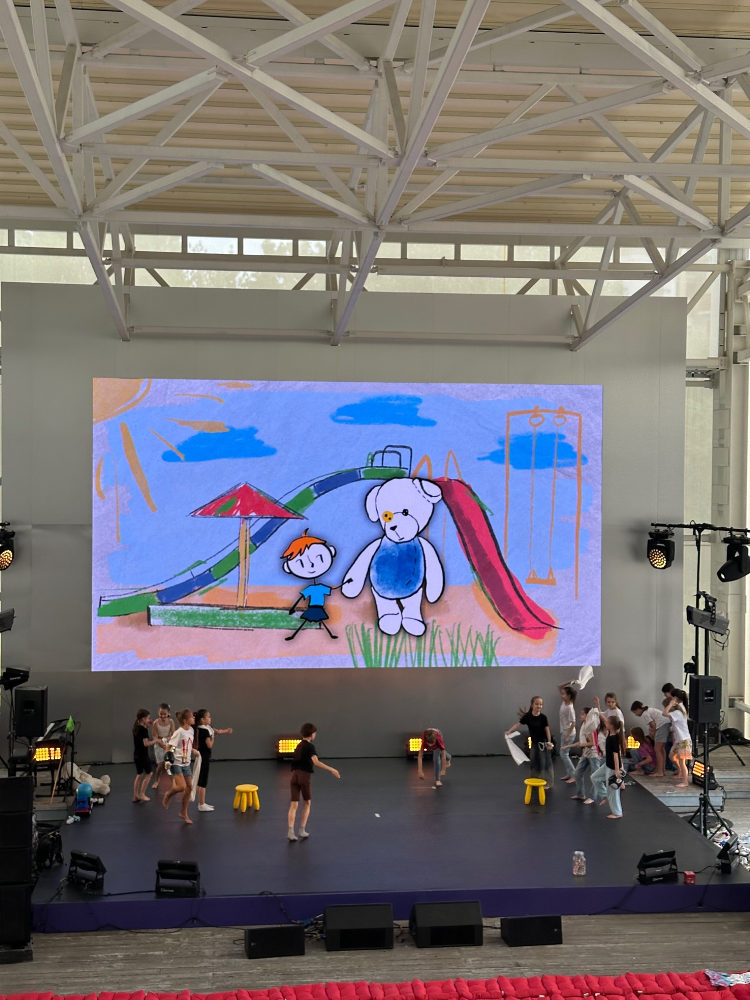
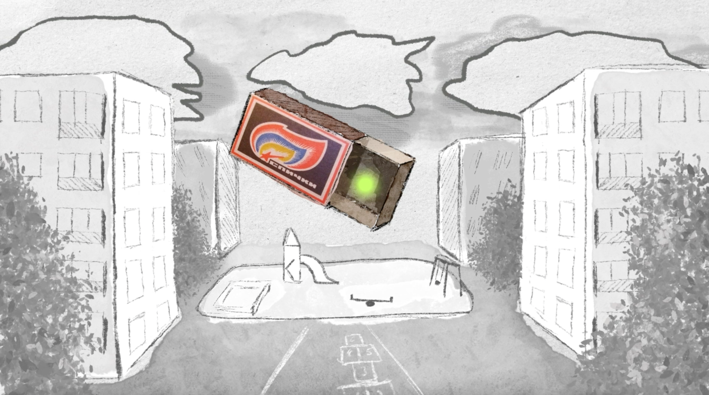
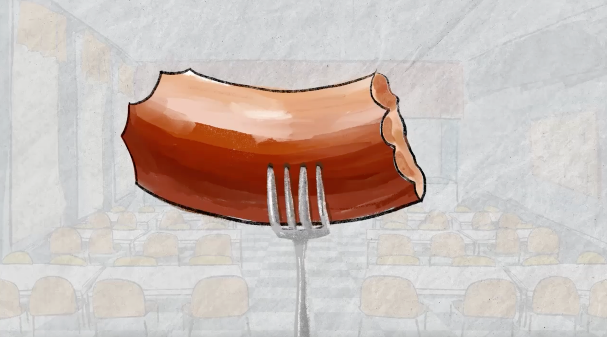

Денискины рассказы
Фестиваль «НЕБО» · май 2025
Студия ШЕНЕ
Режиссёр — Дмитрий Сердюк
Анимация / видеоконтент
Студия ШЕНЕ
Режиссёр — Дмитрий Сердюк
Анимация / видеоконтент

О проекте
В основе видеоконтента спектакля — рисованная анимация, созданная как продолжение детского, немного наивного мира «Денискиных рассказов».



Денискины рассказы
Все проекты →